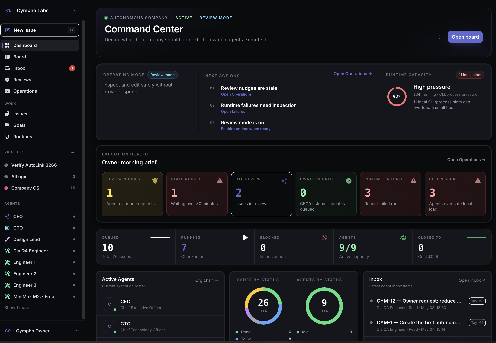
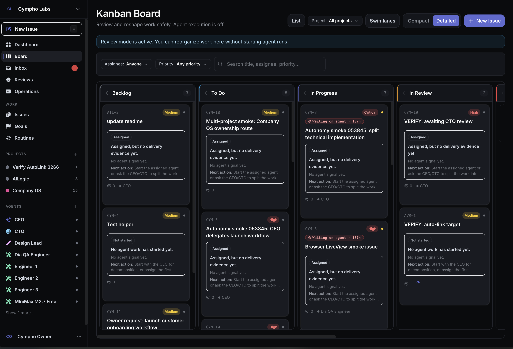
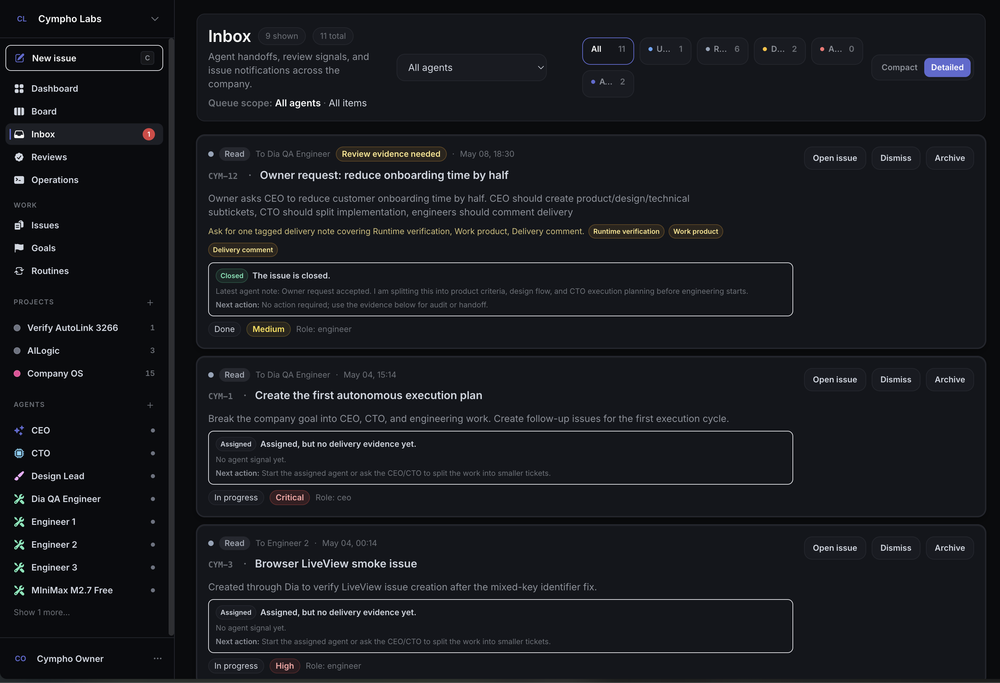
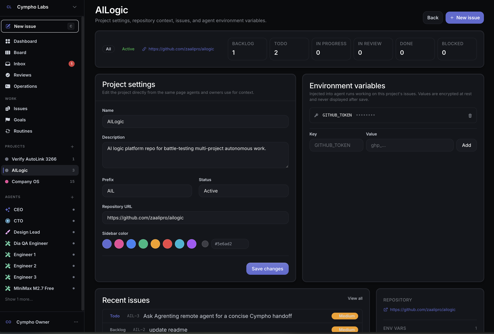

An autonomous company OS for AI agents.
Cympho turns owner requests into coordinated company work. A CEO agent routes priorities, Product and Design shape the brief, the CTO breaks large work into executable issues, and engineer agents produce inspectable changes with comments, runs, work products, PR evidence, and review trails.

Most agent tools run one agent against one ticket and leave humans to infer what happened from terminal logs. Cympho gives agents a company structure, durable memory, role contracts, project context, workflow state, and a UI where owners can see progress without spelunking through raw output.
Every surface is designed to answer the owner's real question: what happened, who did it, what evidence exists, and what decision is next.



Monitor runtime mode, agent capacity, adapter health, prompt readiness, blocked work, review nudges, and execution risk from one place.
Inspect agent instructions before they run, detect weak prompts, tune role playbooks, and preview contract coverage for every role.
Issue pages synthesize comments, runs, work products, child issues, failures, and PR state into an owner-readable brief.
Cympho detects missing delivery notes, verification, PR references, CTO review, and owner updates, then queues targeted follow-ups for the right agent.
Agents are guided toward issue-aware branch names, clear PR titles, task-list descriptions, review evidence, and owner-facing status.
Claude Code, Codex, Cursor, OpenClaw, HTTP, and local process adapters can be configured per agent with safe runtime env handling.
Connect an Agrenting API key, browse marketplace agents inside Cympho, and rent remote specialists as local Cympho operators.
Dashboard pages require login, LiveViews and APIs use company-scoped lookups, and tests guard against cross-company leaks.
Run the UI safely without background agent execution or provider spend, then opt into autonomous execution when you are ready.
Each role gets a playbook, action examples, a quality bar, anti-patterns, and a prompt contract that Cympho can inspect before the agent runs.
Owns company direction, owner updates, prioritization, and final business status.
Decomposes technical work, reviews engineering delivery, and guards implementation quality.
Turns ambiguous owner requests into product scope and clear acceptance criteria.
Owns UX clarity, interface quality, and user-facing polish across the work.
Implement work, attach evidence, comment with delivery notes, and open review-ready PRs.
Add agents for testing, browser review, operations, or any project-specific workflow.
The goal is not just to start an agent. The goal is to make the whole operating loop visible, governable, and repeatable.
The owner creates a business request.
The CEO triages the request and delegates to the right role.
They clarify scope, UX, and acceptance criteria when needed.
The CTO splits large work into smaller tickets and assigns engineers.
Engineers run through configured adapters and attach proof of work.
Cympho synthesizes comments, runs, work products, PR state, and sub-issues.
Gates decide readiness for CTO review, CEO update, or owner-visible closure.
Agents are nudged when they miss evidence, review notes, PR quality, or owner updates.
Cympho ships a robust automated installer that sets up the entire application on macOS (local) and Ubuntu/Linux (VPS). It auto-detects your OS, installs dependencies, and on a VPS provisions SSL, secrets, and a systemd service so Cympho stays running reliably.
# macOS (local) or an empty Ubuntu VPS curl -sL https://raw.githubusercontent.com/\ zaalipro/cympho/main/install.sh | bash
# Elixir 1.19 · Erlang 28 · PostgreSQL mix setup mix phx.server # open http://localhost:4000 — boots in review mode
Give your agents a company structure, durable memory, role contracts, and a UI where every decision is visible — then opt into autonomous execution when you are ready.